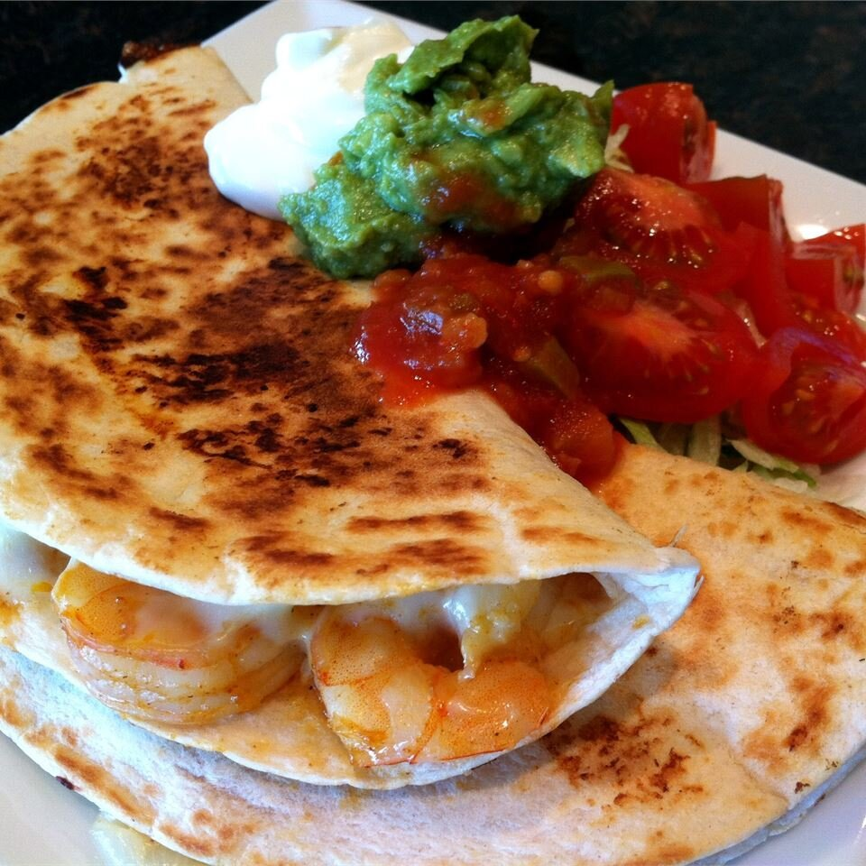

Return to homepage
Shrimp Quesadillas

Description
Spicy quesadillas with a fajita-style shrimp filling. Garnish with chopped cilantro and
serve with sour cream.
Ingredients
- 2 tablespoons vegetable oil
- 1 onion, sliced
- 1 red bell pepper, sliced
- 1 green bell pepper, sliced
- 1 teaspoon salt
- 1 teaspoon ground cumin
- 1 teaspoon chili powder
- 1 pound uncooked medium shrimp, peeled and deveined
- 1 jalapeno pepper, seeded and minced
- 1 lime, juiced
- 1 teaspoon vegetable oil, or as needed
- 6 large flour tortillas
- 3 cups shredded Mexican cheese blend, divided
Steps
-
Heat 2 tablespoons vegetable oil in a large skillet over medium-high heat. Cook and
stir onion, red bell pepper, and green bell pepper in the hot oil, stirring
frequently, until onion is translucent and peppers are soft, 6 to 8 minutes.
- Stir salt, cumin, and chili powder into onion and bell peppers.
-
Stir shrimp into onion and bell peppers and cook until shrimp are opaque and no
longer pink in the center, 3 to 5 minutes.
-
Remove skillet from heat; stir jalapeno pepper and lime juice into shrimp mixture.
- Heat a skillet over medium heat and brush with about 1 teaspoon vegetable oil.
-
Place a tortilla in the hot oil. Spoon about 1/6 shrimp filling and 1/2 cup Mexican
cheese blend on one side of tortilla. Fold tortilla in half
-
Cook until bottom of tortilla is lightly browned, about 5 minutes; flip and cook
other side until lightly browned, 3 to 5 minutes. Repeat with remaining tortillas
and filling.
Return to homepage